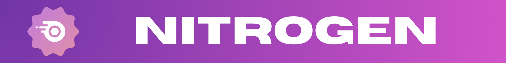
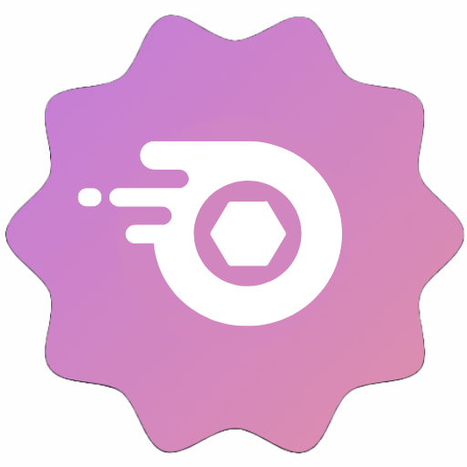

C'est le projet dont je suis le plus fier, un projet qui rassemble la plupart de mes compétences.
J'ai crée autour de ce projet, 2 autres, que vous pouvez découvrir ci-dessous.
Pendant le développement ce bot, ajouté à Discord en 2021, j'ai pu découvrir de nouveaux langages de programmation.
Je me suis alors spécialisé en Javascript, Node.Js et Discord.Js.
C'est aussi un projet utile, qui est utilisé par une trentaine de serveurs, et plus de 200 000 utilisateurs.
Il contient plus de 60 commandes, avec des fonctionnalités d'animations, de gestion et de modération. Actuellement en version 1.5.0, le bot est peu mis à jour, mais avec le temps, ça reviendra !
Coop Status - Un aide pour le serveur support
Mon second projet, un bot de statut, il me permet de créer des automatisations sur mon serveur support.
Je l'ai codé en Discord.js, et séparé du bot principal, pour un meilleur temps de réponse, car le code est plus optimisé, donc plus rapide.
J'ai ajouté à ce bot des fonctions comme, la détection de rôle, de statut personnalisé, je peux ajouter automatiquement un rôle si certaines conditions sont remplies.
Une fonctionnalité de mail, avec une commande utilisable seulement en messages privés, qui permet de contacter les modérateurs du serveur en direct sans passer par un autre service !
Ce bot m'a permi de m'améliorer dans l'hébergement stable et rapide, avec des outils comme Render, UptimeRobot.
Ma première API, qui est entièrement publique, utilisant Flask, Pillow et Gunicorn. Codé en python, elle m'a permis de développer mes compétences en Python, et en Node.Js.
Il y a seulement 1 endpoint (/captcha) pour l'instant mais je n'hésiterai à en ajouter dès que j'aurai le temps !
Le code source est disponible sur le dépôt Github, tout comme le bot Coop et Coop Status !
 NitroGen - Générateur de cadeau Discord*Le bot génère seulement une suite de caractères aléatoires.
Un autre bot que j'ai créé en début d'année 2024, pour simplement générer des codes Nitro. Vous avez juste à envoyer un message au bot pour qu'il vous envoie un code, qui souvent, ne fonctionne pas.
Mais j'ai quand même essayé !
Ce bot m'a permis de découvrir les mathématiques en Javascript et l'hébergement facile sur Render.